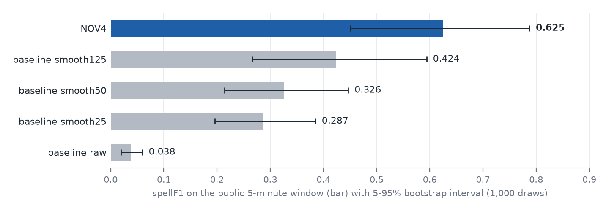

A rule-based, label-free possession model: dead-ball detection, a nearest-player control signal and a flicker-resistant decoder
In one paragraph. We label all 199,319 frames of the tactical video H / A / D using only
the provided automatic tracking (ATD). Smart Tagging plays a very small part, and the half
boundaries published in DATA.md set the match scope. No model is trained and no
labelled data of any kind is used. Stage 1 finds dead-ball spans from drops in player speed
and from the ball leaving the pitch. Stage 2 turns the distance from the ball to the nearest
player of each team into a per-frame control signal. A two-state Viterbi decoder, with a cost for
every switch and a 2-second minimum spell, turns that signal into possessions that do not flicker.
That is what the ranking metric, spellF1, rewards.
Result on the public 5-minute window (see section 8 for why this is a check, not a
benchmark): spellF1 0.625, macroF1 0.904, dead-ball recall 0.89. The best published
baseline, smooth125, scores 0.424 / 0.581. Reproduction is verified: a clean
rebuild from the raw data gives a byte-identical file (SHA-256 6bbbefa3…8c954ee7f1930).
Requirements: uv and Python 3.12 (pinned in
.python-version). All dependencies are pinned exactly in uv.lock
(kloppy 3.19.1, numpy 2.5.4, pandas 3.1.0, matplotlib 3.11.2). The organisers' repository is a
git submodule and is needed for the official validator. The run needs about 4 GB of RAM and takes
about one minute end to end.
git clone --recurse-submodules https://github.com/An-AnD-A/MoreThanAHack.git
cd MoreThanAHack
uv sync --frozendata/tactical/BAR-ATH_tactical_atd.xml
data/tactical/BAR-ATH_tactical_atd.txt
data/tactical/BAR-ATH_tactical_smart_tagging.xmlvalidate_submission.py on it, and stops with an error if validation
fails.
uv run python Scripts/05_PossessionAssignment.py --refreshdata/derived/possession/submission/NOV4.csv: the file to upload.
--refresh rebuilds the tracking cache from the raw ATD (about 50 s). Leave the flag
out on later runs to reuse the cache; the output is identical either way.uv run python Scripts/06_ScoreSubmission.py --with-baselines --bootstrap 1000NOV4.csv:6bbbefa3813265e853adc5a77411886a4eae140289bf872113d8c954ee7f1930sha256sum on Linux / macOS, Get-FileHash in PowerShell).The file is written with \n line endings, so it is byte-identical on every OS. The
labelling path is deterministic and uses no random numbers. Other outputs from step 3, all in
data/derived/possession/: dead_spans.csv (one row per dead span and the
reason it is dead), possessions.csv (one row per decoded spell) and
timeline.png (control evidence and labels over each half).
Before building the model we explored the data with scripts 01–04, and later with a dead-ball sweep (script 07). Each finding below led directly to a design decision.
| Exploration | What we found | What it decided |
|---|---|---|
Frame alignmenthelpers/loader.py, 01_DataExploration.py |
199,319 ATD records for 199,319 video frames: contiguous, no duplicates,
video_frame = frame_id − 1. |
Every signal can be indexed directly by submission row. The pipeline checks this before anything else. |
Ball visibility01_DataExploration.py |
The ball is tracked on only 56.9% of all frames (59.3% of graded frames, 72% of frames we later call alive). When it is lost, it is usually out of play, in a player's hands or hidden in a crowd. | (a) Long gaps in ball tracking are evidence of a dead ball. (b) The decoder must carry possession through blind stretches instead of guessing frame by frame. |
Units and speed03_SetPieceIntensity.py |
The player-speed channel is labelled “kph” but is m/s: differentiating the positions reproduces it with a median ratio of 1.01, and its 99.99th percentile is 8.9. The raw ball-speed channel is present on only ~10% of frames. | Use the provider's player speed as-is. Compute ball speed from position over ±3 frames and discard jumps above 40 m/s as glitches. |
Smart Tagging timeline02_TaggingDataInsights.py |
Tags are algorithmic and their intervals are templated: a set piece is a fixed 35 s window
(5 s for kick-offs). Each DEFENDING … code mirrors an attacking code for the other
team. |
Tags must never set a possession boundary. They are used only as a very weak prior on frames with no ball, plus label-free validation. Defending codes are skipped as duplicates. |
Set pieces vs intensity03_SetPieceIntensity.py |
Open play runs at about 1.8 m/s per player. Around a set-piece tag, speed falls from about −15 s to about 1.0 m/s, then overshoots to 2.4 m/s after the restart. The stoppage dip is −36% (2.00 → 1.28 m/s; 82% of events dip; Cohen's dz −0.95), against −0.09 ± 0.13 m/s at random open-play moments (z = −5.0). The tag's start marks the stoppage, and most of the tag window is the play after the restart. | A drop in collective player speed is a real, detectable signature of a stoppage. This is the basis of Stage 1. |
Blind velocity-drop detection04_VelocityDropDetection.py |
We found drops from the ATD alone, without the tags, then compared them with the tags. The drops catch 75% of the 59 tagged set pieces (chance 27%, p = 0.0005 over 2,000 random rotations of the tag times). 51% of drops contain a tag (chance 18%; a lower bound, because fouls are rarely tagged). By type: corners 12/12, free kicks 5/5, throw-ins 19/26, goal kicks 5/10. A threshold sweep showed the result is not an artefact of one cut-off. | Adopted as the dead-ball backbone, with a speed ratio to the local tempo instead of a fixed m/s cut. Quick throw-ins and goal kicks are missed, which motivated the separate ball-out-of-play rule (1b). |
Dead-ball threshold sweep07_DeadBallExperiments.py |
Seven variants: looser or stricter hysteresis, shorter stoppages, relaxed dead tests, more sensitive out-of-play detection, wider edges, and a combination. The looser variants raise set-piece agreement (up to 91%), but public-window dead-ball recall stays at 0.48 for all of them. The stricter one collapses it to 0.14. | Missed dead balls are not a threshold problem but a structural one. This led to the two rules described in section 4. |
Match scopeDATA.md vs Smart Tagging |
Kick-off and last-tag times put the 2nd-half start 2,852 frames (114 s) late, and the 1st half 19,213 frames past its real end (into half-time). | Use the half boundaries the organisers publish in DATA.md (section 3, step 0). |
H H A H H turns one correct possession into three wrong ones. The public baselines
show this: the raw nearest-player rule produces 131 possessions where the truth has 17. So the
whole design is about not switching unless the evidence is sustained.Figure 1. The pipeline. All of it lives in Scripts/05_PossessionAssignment.py,
which reuses the drop detector of script 04.
The match scope is the two graded halves published by the organisers in DATA.md:
video frames 11,185–90,651 and 110,808–190,197 (GRADED_HALVES). Frames outside them
are written as X; they are never scored. Why: the organisers publish these as
boundaries that carry no label information. The obvious alternative, Smart Tagging's kick-off
and last tag, starts the 2nd half 114 s late, which would leave 2,521 graded frames labelled
D. Each half now starts a fresh decoding segment at its first graded frame.
1a. Velocity drops (script 04). Mean player speed, smoothed over 3 s, is divided by the local tempo (a 120 s rolling median). A drop starts when this ratio falls below 0.6 and lasts while it stays below 0.8 (hysteresis). Gaps under 2 s are merged and drops under 4 s discarded. Why a ratio: it stays fair across frantic spells and tired legs late in the match, where a fixed m/s cut would not. A slow build-up is also a drop, so a drop counts as dead only if one of these holds inside it:
Drops that pass none of the tests (17 in the match) stay alive as open-play lulls.
1b. Fast out-of-play spans. These are stoppages too short for a 3 s smoother to see, such as a throw-in taken in 5 s. The ball tracked more than 1 m beyond a line for at least 0.4 s is dead until the first kick after it is back inside.
1c. Boundary snapping. A smoothed drop's edges are seconds out, which loses the possession at IoU 0.7. So each start is snapped to the moment the ball leaves the pitch or disappears after its last fast movement. Each end is snapped to the kick onset that follows the longest pause: ball faster than 4 m/s, sustained on 3 of 5 frames, after at least 1 s of quiet. Why the longest pause: the restart ends the stoppage, while a pass straight after it follows only a short pause. Two exceptions, identified in testing (section 4), because there the snapping does harm:
1d. Clean-up. An alive gap under 3 s between two dead spans becomes dead: a restart that stops again immediately is far more likely a detection gap than a possession. Dead spans under 1 s are dropped.
Computed only on frames where the ball is tracked. With dH and dA the distances from the ball to the nearest home and away player (a minimum over each team's slots, so duplicated or fragmented tracklets do not matter):
who(t) = tanh((d_A − d_H) / 1.5 m) +1 home clearly nearer, −1 away, ~0 contested
w_dist(t) = 1 if nearest player ≤ 1.5 m, else exp(−(d − 1.5) / 2 m)
w_speed(t) = 1 up to 7 m/s, falling linearly to 0 at 15 m/s (ball in flight)
e(t) = w_dist · w_speed · who in [−1, +1]Why: 1.5 m is a playing distance (a player can touch the ball). A ball 8 m from everyone
belongs to nobody. 7 m/s is dribbling pace. A ball travelling at 15 m/s is a pass or a shot, and
the players it flies past have not won it. tanh makes a 50-50 contest score near zero,
so a duel does not flip possession on its own. Untracked frames carry no evidence, so the decoder
keeps the current team. Smart Tagging phase codes that name the team in possession (BUILD UP,
PROGRESSION, CREATING CHANCES, LONG BALL, ATTACKING TRANSITION) add ±0.02 per frame, and only on
frames with no ball.
Each alive segment is decoded separately, so a dead span always separates possessions. A two-state Viterbi finds the H/A path that maximises Σ ±e(t) − 15 × (number of switches). A permanent change of team therefore needs about 7.5 units of opposing evidence (≈ 0.3–0.4 s of clear control), and a brief visit H→A→H needs twice that. Ties switch as late as possible, so the frames of a pass in flight stay with the passing team and the boundary lands on the receiver's first touch. Finally, any spell shorter than 2 s is absorbed into its neighbours, shortest first. Why: spellF1 matches whole possessions by temporal IoU. A false short spell costs a false positive and breaks the IoU of the possession around it, while a true possession under 2 s is almost impossible to match at IoU ≥ 0.5 anyway.
When we first tested the pipeline (stages 1a, 1b and the full boundary snapping, with Smart Tagging as the match scope), the public-window check showed a dead-ball precision of 0.97 but a recall of only 0.48. When we called a frame dead we were right, but we missed half of the dead time. The threshold sweep in script 07 (section 2) showed that no setting of the detector's thresholds fixed this. We then examined what kind of stoppage was being missed and found two general mechanisms, not specific frames:
Checking the match scope against DATA.md separately showed the tag-based 2nd-half start was 114 s late, which led to step 0. The constants of these rules come from reasoning, not a search: 12 s is far longer than a lull in play, and 0.5 sits below the detector's 0.6 entry threshold. No constant was swept against the public window. The ablation below shows what each component contributes.
| Components (cumulative) | spellF1 | macroF1 | D recall | D precision | possessions (truth 17) |
|---|---|---|---|---|---|
| Stages 1a–1d without the two exceptions or the long-stop test; Smart Tagging scope | 0.577 | 0.780 | 0.48 | 0.97 | 17 |
| + graded halves from DATA.md (step 0) | 0.577 | 0.780 | 0.48 | 0.97 | 17 |
| + out-of-play spans keep their start | 0.594 | 0.814 | 0.57 | 0.98 | 16 |
| + long-stop test and its kept edges (submitted, NOV4.csv) | 0.625 | 0.904 | 0.89 | 0.96 | 15 |
Public 5-minute window. Step 0 only affects the start of the 2nd half (2,521 graded frames), which this window does not cover, so it scores the same here.
| Asset | Used? | How / why |
|---|---|---|
Tactical ATD (_atd.xml + _atd.txt) | Yes — core | Player and ball positions (converted to metres using the metadata's pitch size) and the per-player speed channel. Loaded with kloppy, after an alignment check confirms one record per video frame. |
| Half boundaries (DATA.md) | Yes | Match scope (step 0). Published by the organisers; they carry no labels. |
| Tactical Smart Tagging | Yes — limited | (1) A ±0.02 per-frame prior from the phase codes, only on frames with no ball. (2) Label-free validation of the dead-ball detector. Smart Tagging is algorithmic, not human-produced. |
| Smart Tagging as match scope | Tested, dropped | Kick-off to last tag starts the 2nd half 114 s late; the DATA.md half boundaries are used instead. |
| Smart Tagging as boundaries | Dropped | Tag intervals are templated windows, so they must never set a possession boundary.
DEFENDING … codes mirror the attacking ones and are skipped, not inverted. |
| Tactical homography | Dropped | The ATD is already in pitch coordinates, so we never needed to map video pixels to the pitch. |
| Tactical video | Inspection only | Watched to understand the data and to debug. No frames were labelled or used in the pipeline. |
| Broadcast video, ATD, homography | Dropped | A different frame count (164,488 vs 199,319 submission rows), replays and zooms, and only 65.8% usable homography. Everything is indexed on the tactical feed. |
| Raw ball-speed channel | Dropped | Present on ~10% of frames; ball speed is computed from position instead. |
| “Other team restarts” prior | Tried, dropped | A head start for the non-possessing team after the ball went out. The law follows the last touch, and a clearance that goes out is one touch inside the other team's possession. A label-free check found the decoded team before the stoppage agreed with “other team restarts” only ~40–44% of the time. |
| Organisers' validator and scorer | Yes — tooling | validate_submission.py and run_evaluation.py are run unchanged
(git submodule archive/REPO). |
None. No labelled dataset of any kind was used, from the provided game or from any other game. Nothing in the pipeline is trained or fitted to labels.
Every constant (thresholds in metres, m/s and seconds; the switch cost; the minimum spell) was set from football and physical reasoning and checked with label-free diagnostics: possession counts and durations, label shares, and how well the dead-ball detector agrees with the automatic Smart Tagging set pieces, including a permutation test against chance. Section 4 describes how the public 5-minute window was used. No frame-specific rule or constant appears in the code, and no human-produced data about the game (event data, corrected tracking) was used.
| Situation | Where we drew the line |
|---|---|
| Ball in / out of play | Dead (D) when any of these holds:
|
| Controlled possession | A team gains possession when the ball is close to one of its players (within 1.5 m at full weight, decaying beyond), clearly closer than any opponent, and at a controllable speed (up to 7 m/s at full weight). That control must last long enough to pay the switch cost (~0.3–0.4 s of clear control), and the resulting spell must last at least 2 s. |
| Loose ball | A ball far from everyone, or untracked, gives zero evidence, so possession stays with the last team, as the challenge definition asks. |
| Challenges / 50-50s | When both teams are at a similar distance, the evidence is near 0, so a duel does not flip possession. Only the winner's subsequent control does. |
| Touches, deflections, aerial duels | A single touch gives a few frames of evidence, not enough to pay the switch cost. A brief visit to the other team must pay it twice, and any surviving spell under 2 s is absorbed. |
| Passes and shots in flight | A ball faster than 15 m/s carries zero weight. Ties switch late, so the change lands on the receiver's control, not mid-flight. |
| Restarts | Every restart starts a new alive segment, so a possession never spans a stoppage. Who restarts is decided by the evidence after the restart kick, with no law-based prior. A tiny keep-previous-team bias (0.5) only breaks ties in segments with no evidence at all. |
| Abstention (X) | Only outside the two graded halves, which are never scored. Inside them the decoder always commits to H, A or D. |

Figure 2. Public-window spellF1. With 17 possessions the intervals are wide, and the scorer itself reports gaps under ~0.34 as within noise here. The window confirms the pipeline is correct; it cannot rank close systems.
| Metric (public window, 7,500 graded frames) | NOV4 | smooth125 | smooth50 |
|---|---|---|---|
| spellF1 (ranking metric) | 0.625 | 0.424 | 0.326 |
| macroF1 | 0.904 | 0.581 | 0.621 |
| Predicted / true possessions | 15 / 17 | 16 / 17 | 26 / 17 |
| Mean possession length (truth 14.2 s) | 16.4 s | 18.5 s | 10.8 s |
| F1 H / A / D | 0.908 / 0.882 / 0.921 | 0.786 / 0.811 / 0.146 | 0.778 / 0.762 / 0.323 |
| Alive-vs-dead F1 · team accuracy when both alive | 0.982 · 0.914 | 0.899 · 0.885 | 0.899 · 0.858 |
| Transition F1 at ±25 frames | 0.368 | 0.167 | 0.082 |
--refresh, 50 s), then re-ran from the cache. Both runs produced byte-identical
output, SHA-256 6bbbefa3813265e853adc5a77411886a4eae140289bf872113d8c954ee7f1930.validate_submission.py passes: 199,319 rows, frames
0…199,318. Labels: H 33.3%, A 25.6%, D 20.7%, X 20.3% (X only outside the graded halves). The
pipeline refuses to finish if validation fails.| Path | Role |
|---|---|
Scripts/05_PossessionAssignment.py | The model: scope, stages 1–2, decoder, writes and validates NOV4.csv |
Scripts/04_VelocityDropDetection.py | Velocity-drop detector (reused by 05) and its Smart Tagging validation |
Scripts/03_SetPieceIntensity.py | Set pieces vs player intensity (exploration, section 2) |
Scripts/06_ScoreSubmission.py | Runs the official validator and scorer unchanged |
Scripts/07_DeadBallExperiments.py | Dead-ball threshold sweep (section 2) |
Scripts/01, 02 | Data exploration (ball visibility, squads) and the Smart Tagging timeline |
src/morethanahack/helpers/ | config (paths), loader (ATD, Smart Tagging, alignment checks), explorer (pitch, frame viewer) |
docs/NOV4.pdf, docs/source/ | This document and its source (uv run python docs/source/build_document.py) |
archive/REPO (submodule) | Organisers' challenge repository: rules, validator, scorer, baselines |
Data. data/ and every match-derived export (videos, ATD, homography, Smart
Tagging, frame-level CSVs, the tracking cache, the submission) are in .gitignore; no
match data is in the repository.